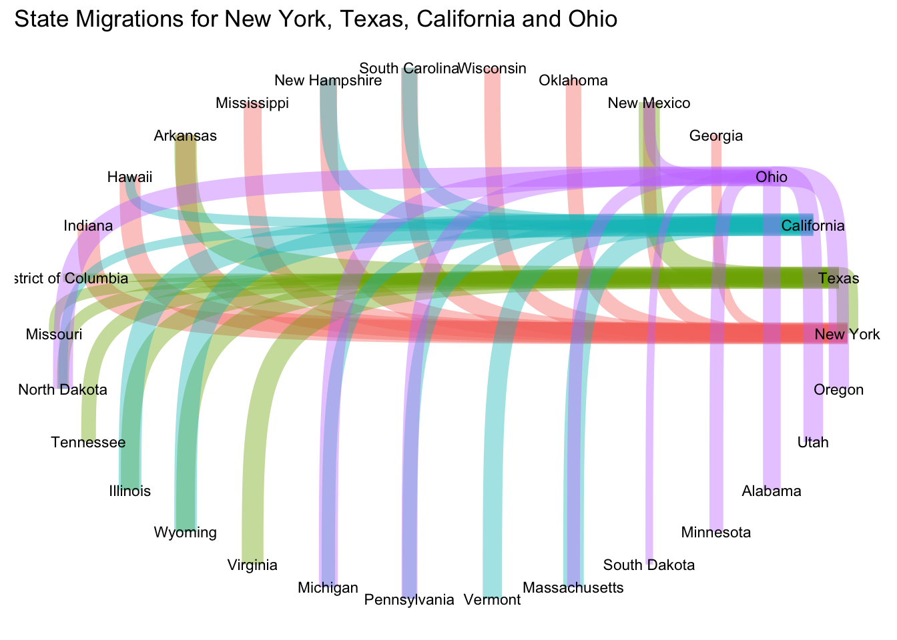

setwd("~/Desktop/ANLY 503/ANLY503_Portfolio/")
library(dplyr)
library(tidyr)
library(readxl)
library(tidygraph)
library(ggraph)# read in the excel file
data <- read_excel("data/State_to_State_Migrations_Table_2018.xls",
range = "L7:DQ78")
# select New York, Texas, California and Ohio
network <- data %>%
select(...1, `New York`, Texas, California, Ohio)%>%
rename(current = ...1)
# take out rows with NA
network <- na.omit(network)
# remove total row and puerto rico
network <- network[-c(1, 53), ]
# change NY into network format and select top 10
ny <- network[, 1:2]
ny <- ny %>%
pivot_longer(`New York`, names_to = "source") %>%
rename(target = current, count = value)
ny <- ny[order(ny$count),][1:10,]
# repeat for other states
tx <- network[, c(1,3)]
tx <- tx %>%
pivot_longer(Texas, names_to = "source") %>%
rename(target = current, count = value)
tx <- tx[order(tx$count),][1:10,]
ca <- network[, c(1,4)]
ca <- ca %>%
pivot_longer(California, names_to = "source") %>%
rename(target = current, count = value)
ca <- ca[order(ca$count),][1:10,]
oh <- network[, c(1,5)]
oh <- oh %>%
pivot_longer(Ohio, names_to = "source") %>%
rename(target = current, count = value)
oh <- oh[order(oh$count),][1:10,]
data <- rbind(ny, tx, ca, oh)
data <- data[, c(2, 1, 3)]tidygraph.# change into data table format to prepare for graphing
graph <- as_tbl_graph(data) %>%
activate(nodes)%>%
mutate(state = name,
label = name)
ggraph(graph, layout = "circle")+ # layout the states into a circle
geom_edge_bend(aes(edge_width = count, color = as.factor(from)), alpha = 0.4)+ # different color for each source state, and the width as the count of people
geom_node_text(aes(label = label), size = 3)+
theme_classic()+
theme(axis.text = element_blank(),
axis.ticks = element_blank(),
axis.title = element_blank(),
axis.line = element_blank(),
legend.position = "none") +
ggtitle("State Migrations for New York, Texas, California and Ohio")